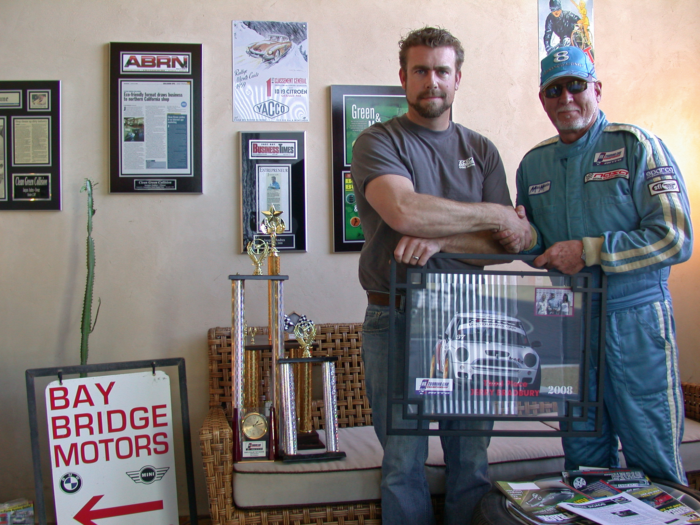

About Owner
Jacques Andres History
Business Owner

History
Jacques Andres has always loved cars and has worked in the automobile industry for more than 25 years. He earned a bachelor's degree from the Arizona Automotive Institute, and then completed mechanics and race training school at Laguna Seca Raceway with Russell Racing of Monterey. Eventually, Andres formed and ran a national pro formula car race team.
Andres subsequently created Alien Composites, a company that built fiberglass and carbon fiber parts for race cars, and worked his way up to Indy cars. He assumed greater responsibility for his clients and provided advice on team management and driver issues. On the engineering side, he focused on aerodynamics and suspension issues. He worked as a driver coach with some of America's top race-car drivers using sophisticated tracking technology. Though he still races a Mini Cooper in the 25 hour NASA Pro Endurance, today his focus is on a sustainable approach to future of transportation needs.Favorite Quote:
Driving a race car is like dancing with a chain saw.
-Cale Yarborough
Race Images
